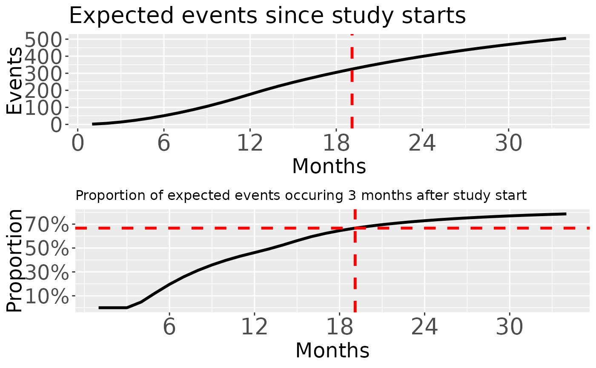

Futility bounds at design and analysis under non-proportional hazards
Keaven M. Anderson
Source:vignettes/articles/story-nph-futility.Rmd
story-nph-futility.RmdOverview
We set up futility bounds under a non-proportional hazards assumption. We consider methods presented by Korn and Freidlin (2018) for setting such bounds and then consider an alternate futility bound based on \(\beta-\)spending under a delayed or crossing treatment effect to simplify implementation. Finally, we show how to update this \(\beta-\)spending bound based on blinded interim data. We will consider an example to reproduce a line of Korn and Freidlin (2018) Table 1 with the alternative futility bounds considered.
Initial design set-up for fixed analysis
Korn and Freidlin (2018) considered delayed effect scenarios and proposed a futility bound that is a modification of an earlier method proposed by Wieand, Schroeder, and O’Fallon (1994). We begin with the enrollment and failure rate assumptions which Korn and Freidlin (2018) based on an example by Chen (2013).
# Enrollment assumed to be 680 patients over 12 months with no ramp-up
enroll_rate <- define_enroll_rate(duration = 12, rate = 680 / 12)
# Failure rates
## Control exponential with median of 12 mos
## Delayed effect with HR = 1 for 3 months and HR = .693 thereafter
## Censoring rate is 0
fail_rate <- define_fail_rate(
duration = c(3, 100),
fail_rate = -log(.5) / 12,
hr = c(1, .693),
dropout_rate = 0
)
## Study duration was 34.8 in Korn & Freidlin Table 1
## We change to 34.86 here to obtain 512 expected events more precisely
study_duration <- 34.86We now derive a fixed sample size based on these assumptions.
Ideally, we would allow a targeted event count and variable follow-up in
fixed_design_ahr() so that the study duration will be
computed automatically.
fixedevents <- fixed_design_ahr(
alpha = 0.025, power = NULL,
enroll_rate = enroll_rate,
fail_rate = fail_rate,
study_duration = study_duration
)
fixedevents %>%
summary() %>%
select(-Bound) %>%
as_gt(footnote = "Power based on 512 events") %>%
fmt_number(columns = 3:4, decimals = 2) %>%
fmt_number(columns = 5:6, decimals = 3)| Fixed Design under AHR Method1 | |||||
| Design | N | Events | Time | alpha | Power |
|---|---|---|---|---|---|
| Average hazard ratio | 680 | 511.99 | 34.86 | 0.025 | 0.905 |
| 1 Power based on 512 events | |||||
Modified Wieand futility bound
The Wieand, Schroeder, and O’Fallon
(1994) rule recommends stopping after 50% of planned events
accrue if the observed HR > 1. kornfreidlin2018 modified this by
adding a second interim analysis after 75% of planned events and stop if
the observed HR > 1 This is implemented here by requiring a trend in
favor of control with a direction \(Z\)-bound at 0 resulting in the Nominal
p bound being 0.5 for interim analyses in the table below. A fixed
bound is specified with the
’gs_b()function forupperandlowerand its correspoinding parametersuparfor the upper (efficacy) bound andlpar`
for the lower (futility) bound. The final efficacy bound is for a
1-sided nominal p-value of 0.025; the futility bound lowers this to
0.0247 as noted in the lower-right-hand corner of the table below. In
the last row under Alternate hypothesis below we see the power
is 88.44%. Korn and Freidlin (2018)
computed 88.4% power for this design with 100,000 simulations which
estimate the standard error for the power calculation to be 0.1%.
wieand <- gs_power_ahr(
enroll_rate = enroll_rate, fail_rate = fail_rate,
upper = gs_b, upar = c(rep(Inf, 2), qnorm(.975)),
lower = gs_b, lpar = c(0, 0, -Inf),
event = 512 * c(.5, .75, 1)
)
wieand %>%
summary() %>%
as_gt(
title = "Group sequential design with futility only at interim analyses",
subtitle = "Wieand futility rule stops if HR > 1"
)| Group sequential design with futility only at interim analyses | |||||
| Wieand futility rule stops if HR > 1 | |||||
| Bound | Z | Nominal p1 | ~HR at bound2 | Cumulative boundary crossing probability | |
|---|---|---|---|---|---|
| Alternate hypothesis | Null hypothesis | ||||
| Analysis: 1 Time: 15.4 N: 680 Event: 256 AHR: 0.81 Information fraction: 0.5 | |||||
| Futility | 0.00 | 0.500 | 1.0000 | 0.0462 | 0.5000 |
| Analysis: 2 Time: 22.9 N: 680 Event: 384 AHR: 0.77 Information fraction: 0.75 | |||||
| Futility | 0.00 | 0.500 | 1.0000 | 0.0469 | 0.5980 |
| Analysis: 3 Time: 34.9 N: 680 Event: 512 AHR: 0.75 Information fraction: 1 | |||||
| Efficacy | 1.96 | 0.025 | 0.8405 | 0.8844 | 3 0.0247 |
| 1 One-sided p-value for experimental vs control treatment. Value < 0.5 favors experimental, > 0.5 favors control. | |||||
| 2 Approximate hazard ratio to cross bound. | |||||
| 3 Cumulative alpha for final analysis (0.0247) is less than the full alpha (0.025) when the futility bound is non-binding. The smaller value subtracts the probability of crossing a futility bound before crossing an efficacy bound at a later analysis (0.025 - 0.0003 = 0.0247) under the null hypothesis. | |||||
Beta-spending futility bound with AHR
Need to summarize here.
betaspending <- gs_power_ahr(
enroll_rate = enroll_rate,
fail_rate = fail_rate,
upper = gs_b,
upar = c(rep(Inf, 2), qnorm(.975)),
lower = gs_spending_bound,
lpar = list(sf = gsDesign::sfLDOF, total_spend = 0.025, param = NULL, timing = NULL),
event = 512 * c(.5, .75, 1),
test_lower = c(TRUE, TRUE, FALSE)
)
betaspending %>%
summary() %>%
as_gt(
title = "Group sequential design with futility only",
subtitle = "Beta-spending futility bound"
)| Group sequential design with futility only | |||||
| Beta-spending futility bound | |||||
| Bound | Z | Nominal p1 | ~HR at bound2 | Cumulative boundary crossing probability | |
|---|---|---|---|---|---|
| Alternate hypothesis | Null hypothesis | ||||
| Analysis: 1 Time: 15.4 N: 680 Event: 256 AHR: 0.81 Information fraction: 0.5 | |||||
| Futility | -1.29 | 0.9015 | 1.1762 | 0.0015 | 0.0985 |
| Analysis: 2 Time: 22.9 N: 680 Event: 384 AHR: 0.77 Information fraction: 0.75 | |||||
| Futility | 0.20 | 0.4206 | 0.9796 | 0.0095 | 0.5799 |
| Analysis: 3 Time: 34.9 N: 680 Event: 512 AHR: 0.75 Information fraction: 1 | |||||
| Efficacy | 1.96 | 0.0250 | 0.8405 | 0.9031 | 0.0250 |
| 1 One-sided p-value for experimental vs control treatment. Value < 0.5 favors experimental, > 0.5 favors control. | |||||
| 2 Approximate hazard ratio to cross bound. | |||||
Classical beta-spending futility bound
A classical \(\beta-\)spending bound would assume a constant treatment effect over time using the proportional hazards assumption. We use the average hazard ratio at the fixed design analysis for this purpose.
Korn and Freidlin futility bound
The Korn and Freidlin (2018) futility bound is set when at least 50% of the expected events have occurred and at least two thirds of the observed events have occurred later than 3 months from randomization. The expected timing for this is demonstrated below.
Accumulation of events by time interval
We consider the accumulation of events over time that occur during
the no-effect interval for the first 3 months after randomization and
events after this time interval. This is done for the overall trial
without dividing out by treatment group using the
gsDesign2::AHR() function. We consider monthly accumulation
of events through the 34.86 months planned trial duration. We note in
the summary of early expected events below that all events during the
first 3 months on-study are expected prior to the first interim
analysis.
event_accumulation <- pw_info(
enroll_rate = enroll_rate,
fail_rate = fail_rate,
total_duration = c(1:34, 34.86),
ratio = 1
)
head(event_accumulation, n = 7) %>% gt()| time | stratum | t | hr | event | info | info0 |
|---|---|---|---|---|---|---|
| 1 | All | 0 | 1.000 | 1.605536 | 0.4013840 | 0.4013840 |
| 2 | All | 0 | 1.000 | 6.301416 | 1.5753540 | 1.5753540 |
| 3 | All | 0 | 1.000 | 13.914192 | 3.4785480 | 3.4785480 |
| 4 | All | 0 | 1.000 | 22.930062 | 5.7325155 | 5.7325155 |
| 4 | All | 3 | 0.693 | 1.145602 | 0.2772752 | 0.2864004 |
| 5 | All | 0 | 1.000 | 31.945932 | 7.9864829 | 7.9864829 |
| 5 | All | 3 | 0.693 | 4.506946 | 1.0919515 | 1.1267364 |
We can look at the proportion of events after the first 3 months as follows:
event_accumulation %>%
group_by(time) %>%
summarize(`Total events` = sum(event), "Proportion early" = first(event) / `Total events`) %>%
ggplot(aes(x = time, y = `Proportion early`)) +
geom_line()
For the Korn and Freidlin (2018) bound the targeted timing is when both 50% of events have occurred and at least 2/3 are more than 3 months after enrollment with 3 months being the delayed effect period. We see above that about 1/3 of events are still within 3 months of enrollment at month 20.